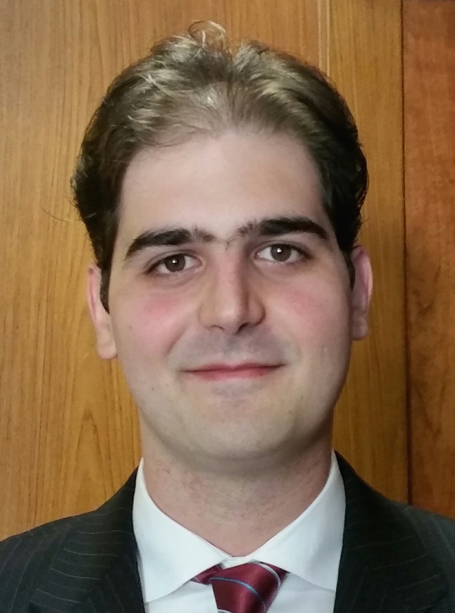
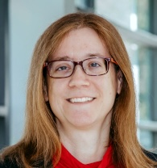
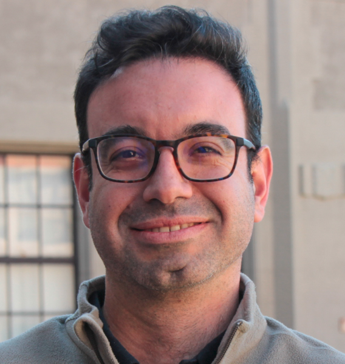
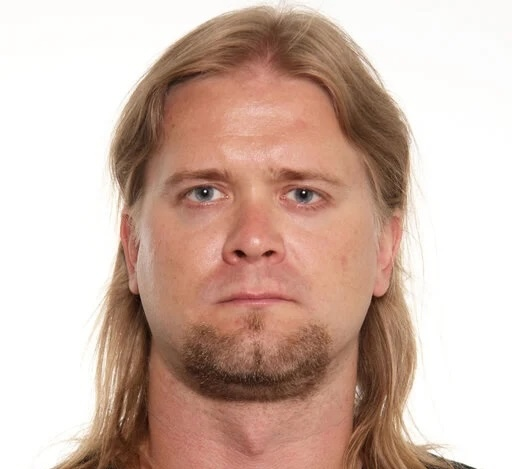
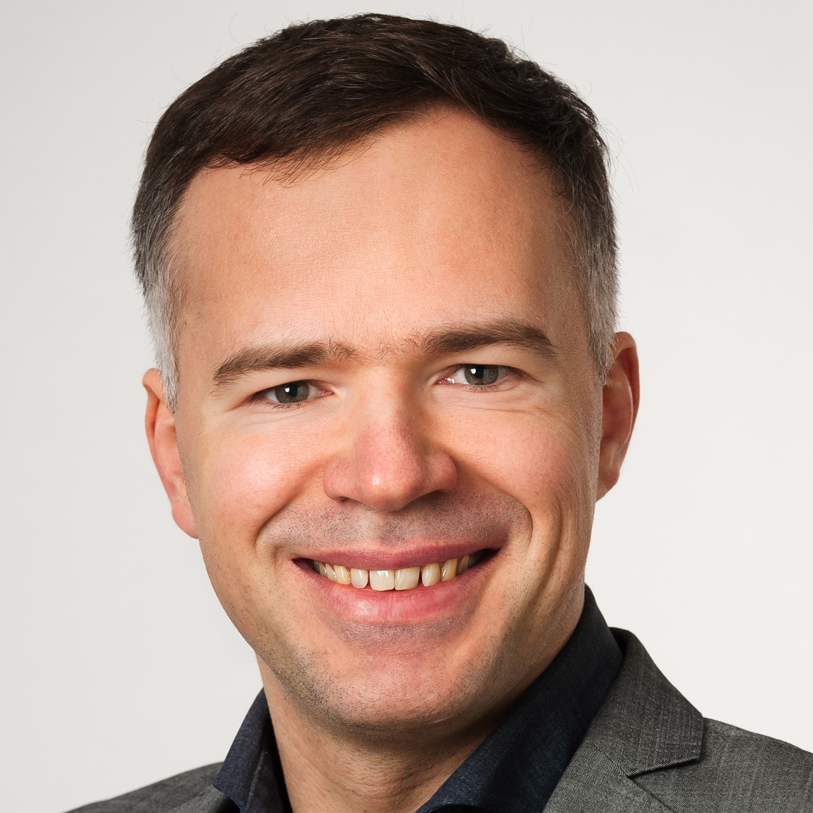

Speakers

Federico Bribiesca-Argomedo
INSA Lyon, Ampère Lab, France
Backstepping techniques from fundamentals to open problems
Website →

Nicole Gehring
Otto von Guericke University Magdeburg, Germany
Systematic backstepping design for PDE–ODE interconnections
Website →

Hector Ramirez
Universidad Técnica Federico Santa María, Chile
Distributed port-Hamiltonian systems for modeling and control
Website →
Alessandro Macchelli
DEI, University of Bologna, Italy
MPC for discrete-time port-Hamiltonian boundary systems
Website →

Jukka-Pekka Humaloja
Technical University of Crete, Greece
Digital MPC for linear distributed parameter systems
Website →

Andrii Mironchenko
University of Bayreuth, Germany
IOS superposition theorem for infinite-dimensional systems
Website →
Yuanyuan Shi
University of California San Diego, USA
Neural operator learning for delay systems and PDE control
Website →
Gustavo A. de Andrade
Federal University of Santa Catarina, Brazil
Data-driven reduced-order PDE control using DMDc
Website →

Shu-Xia Tang
Texas Tech University, USA
Cooperative encirclement control via finite-time backstepping
Website →